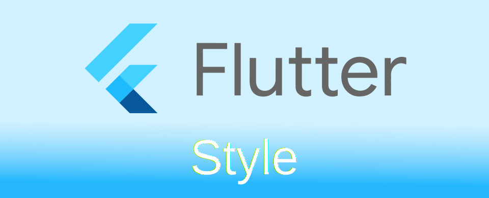

Flutter: การกำหนดค่า Style สำหรับ Widget เบื้องต้น

การเขียนแอปโดยใช้ Flutter มักเริ่มต้นด้วยการใช้ widget MaterialApp หรือ CupertinoApp เพื่อเลือกใช้รูปแบบ Style ตามแบบ Material Design ของ Andriod หรือ iOS ของ Apple
- MaterialApp จะสามารถใช้ Widget ใน material library
- CupertinoApp จะสามารถใช้ Widget ใน cupertino library
ทั้ง 2 ตัวจะมีการสร้าง Style ที่เป็นค่าเริ่มต้นของตัวเอง ซึ่งผู้ใช้สามารถปรับแต่งได้ในภายหลัง หลักการทำงานจะใช้ InheritedWidget ในการส่งข้อมูลต่าง ๆ ไปยัง widget ที่อยู่ลึกลงไปใน widget tree
เลยสงสัยเองว่า แล้วถ้าจะสร้างแอปที่มีรูปแบบอื่น ๆ ที่ไม่ใช่ MaterialApp หรือ CupertinoApp สามารถทำได้ไหม คำตอบคือ "ได้" เนื่องจากทั้ง 2 ตัวเป็นตัวที่ประกาศรูปแบบการสร้าง widget บนจอว่าจะให้มีรูปทรง สี พฤติกรรมอย่างไรบ้าง ดังนั้นหากต้องการอะไรที่ไม่เหมือนทั้งสองอย่าง สามารถสร้างเองได้ ตัวอย่างเช่น package desktop ที่จะมี widget ที่ออกแบบมาให้กับการใช้บน desktop ที่ใช้ mouse เป็นหลัก
เนื่องจากทั้งหมดทั้งมวลจำเป็นต้องตั้งค่า Style เลยมาจดบันทึกเอาไว้ว่ามันทำงานยังไงบ้าง
เขียนหน้าจอแอปโดยไม่ใช่ MaterialApp และ CupertinoApp
การทดลองว่าระบบการจัดการเรื่อง Style มันทำงานยังไง เลยลองเขียนแอปแบบเปลือย คือ ไม่ใช่ตัวช่วยในการสร้าง Style เริ่มต้น ดังนั้นมันจะมีหลายจุดที่ต้องมาใส่เอง ลองตัวอย่างสร้างแอป hello world พื้นสีเหลือง ข้อความตรงกลาง
import 'package:flutter/material.dart';
void main() {
var simpleApp = Container(
child: Center(
child: FittedBox(
child: Text('hello world'),
)),
);
runApp(simpleApp);
}
ผลที่ได้เกิด Exception แจ้งว่า
No Directionality widget found.
แล้วตัวแอปก็มีแต่จอแดง ๆ ไม่มีข้อความอะไร
แอปที่เกิดปัญหา
ปัญหานี้เกิดจาก ไม่มีการกำหนดทิศทางของ Text หากใช้ MaterialApp หรือ CupertinoApp ครอบเอาไว้ มันจะกำหนดค่าเริ่มต้นมาให้ แก้ไขโดยสามารถกำหนดได้ 2 แบบคือ
- ใส่ไว้ใน
Text()โดยตรง - ใส่ผ่าน
Directionality()
// mothod 1
var simpleApp = Container(
color: Colors.yellow,
child: Center(child: Text('hello world', textDirection: TextDirection.ltr)),
);
// mothod 2
var simpleApp = Directionality(
textDirection: TextDirection.ltr,
child: Container(
color: Colors.yellow,
child: Center(child: Text('hello world')),
),
);
แก้ไขเรื่อง text directional แล้ว
เรื่องของ Theme
จุดเริ่มต้นของระบบ Theme จะมาจาก base class ชื่อ InheritedTheme ถ้าจะตั้งค่าปรับแต่งอะไรให้มาดูว่ามี class ไหนที่ implement ตัว InheritedTheme บ้าง
DefaultTextStyle
ตั้งค่าเริ่มต้นของรูปแบบข้อความที่จะใช้แสดงผล ก็ตรงไปตรงมา DefaultTextStyle กำหนดผ่านตัวนี้ได้เลย ตัว constructor ดังนี้
const DefaultTextStyle({
Key? key,
required TextStyle style,
TextAlign? textAlign,
bool softWrap = true,
TextOverflow overflow = TextOverflow.clip,
int? maxLines,
TextWidthBasis textWidthBasis = TextWidthBasis.parent,
TextHeightBehavior? textHeightBehavior,
required Widget child,
})
วิธีใช้ ก็เอาไปครอบตัว widget ที่ต้องการกำหนดค่า สามารถใช้คำสั่ง DefaultTextStyle.of(BuildContext context) เพื่ออ่านค่าจาก Parent เพื่อมาปรับใช้งานได้
ตัวที่ใช้ข้อมูลจาก DefaultTextStyle คือ Text() หากพิจารณาตัว constructor จะเห็นว่า Text() สามารถกำหนดค่าทับตัว DefaultTextStyle ได้
const Text(
String data, {
Key? key,
TextStyle? style,
StrutStyle? strutStyle,
TextAlign? textAlign,
TextDirection? textDirection,
Locale? locale,
bool? softWrap,
TextOverflow? overflow,
TextScaler? textScaler,
int? maxLines,
String? semanticsLabel,
TextWidthBasis? textWidthBasis,
TextHeightBehavior? textHeightBehavior,
Color? selectionColor,
})
ในกรณีที่ตัว Text ไม่พบ TextStyle เลย จะแสดงเป็นตัวอักษรสีแดงขีดเส้นสีเหลือง ตัวอย่างด้านล่างจะเป็นการสร้างข้อความ โดยไม่มี Scaffold ที่จะช่วยกำหนดค่าเริ่มต้นของตัว TextStyle
import 'package:flutter/material.dart';
void main() {
var simpleApp = MaterialApp(
home: Center(child: Text('hello world')),
);
runApp(simpleApp);
}
เมื่อ Text ไม่พบ TextStyle
เพิ่ม DefaultTextStyle() ครอบตัว widget ทั้งหมดเอาไว้ ตัว Text() ที่อยู่ใน widget tree ที่ลึกลงไป จะทำการดึงค่า TextStyle ที่กำหนดเอาไว้ไปใช้งาน
import 'package:flutter/material.dart';
void main() {
var simpleApp = MaterialApp(
home: DefaultTextStyle(
style: TextStyle(color: Colors.white, fontSize: 30),
child: Center(child: Text('hello world'))),
);
runApp(simpleApp);
}
ค่า TextStyle จะถูกนำไปใช้ใน Text()
การกำหนดรูปแบบของปุ่มแบบต่าง ๆ
ในตัว Flutter มีปุ่มให้เลือกใช้หลายแบบ แต่ละแบบมีรูปร่างที่ต่างกัน ดังนั้นการกำหนดรูปแบบสามารถกำหนดผ่าน class ที่เกี่ยวข้องดังนี้
- ElevatedButton → ElevatedButtonTheme → ElevatedButtonThemeData
- FilledButton → FilledButtonTheme → FilledButtonThemeData
- OutlinedButton → OutlinedButtonTheme → OutlinedButtonThemeData
- TextButton → TextButtonTheme → TextButtonThemeData
ตัวอย่าง ลองสร้างปุ่มทั้ง 4 แบบ โดยประกาศไว้ใน buttons แล้วเอาไปใส่ไว้ใน body คือส่วนที่เป็นตัวหน้าจอที่แสดงปุ่ม จากนั้นเอา body ไปใส่ไว้ในตัว widget ที่แก้ไขรูปแบบของ widget โดยจะลองกำหนดรูปแบบของ OutlinedButton จากเดิมเป็นจะขอบจะโค้งเป็นปุ่มสี่เหลี่ยมธรรมดาแทน ผ่าน OutlinedButtonTheme → OutlinedButtonThemeData → ButtonStyle → shape: ContinuousRectangleBorder()
import 'package:flutter/material.dart';
void main() {
var buttons = <Widget>[
ElevatedButton(onPressed: () {}, child: Text('Elevated Button')),
FilledButton(onPressed: () {}, child: Text('Filled Button')),
OutlinedButton(onPressed: () {}, child: Text('Outlined Button')),
TextButton(onPressed: () {}, child: Text('Text Button')),
];
var body = Center(
child: Column(
mainAxisAlignment: MainAxisAlignment.spaceAround,
children: buttons,
));
var simpleApp = MaterialApp(
home: DefaultTextStyle(
style: TextStyle(color: Colors.white, fontSize: 10),
child: OutlinedButtonTheme(
data: OutlinedButtonThemeData(
style: ButtonStyle(
shape: WidgetStatePropertyAll(ContinuousRectangleBorder())
)
),
child: body)),
);
runApp(simpleApp);
}
ลองใช้ OutlinedButtonTheme เพื่อเปลี่ยนรูปแบบของ OutlinedButton
พวก Button นี่จะค่อนข้างยุ่งยากในการกำหนดพวก Style หน่อย เพราะตัว Button มันมีสถานะหลายแบบ เช่น ตอนอยู่นิ่ง ๆ ตอนเอาตัวชี้มาชี้ ตอนถูกกด หลังถูกกด 😅 ถ้าต้องการกำหนดรูปแบบทุกแบบก็ใช้ WidgetStatePropertyAll แต่ถ้าต้องการแก้ไขเฉพาะบางสถานะก็ใช้ WidgetStateProperty โดยสถานะของ widget จะใช้ค่าจาก WidgetState
การตั้งค่า theme ใน MaterialApp
ในการสร้างแอป การกำหนด theme ที่จะใช้งานกับทั้งแอป จะกำหนดที่ MaterialApp เพื่อให้ widget ที่อยู่ภายใน widget tree ใช้รูปแบบเดียวกันทั้งหมด
MaterialApp({
// some of theme config ...
Color? color,
ThemeData? theme,
ThemeData? darkTheme,
ThemeData? highContrastTheme,
ThemeData? highContrastDarkTheme,
ThemeMode? themeMode = ThemeMode.system,
Duration themeAnimationDuration = kThemeAnimationDuration,
Curve themeAnimationCurve = Curves.linear,
AnimationStyle? themeAnimationStyle
})
light/dark theme
แอปที่ดีควรสามารถเลือกได้ว่าจะใช้ light dark ตามความต้องการของผู้ใช้ อาจอิงจากระบบหรือเลือกได้เอง การตั้งค่าสามารถกำหนดได้ใน themeMode ค่าเริ่มต้นจะเป็น ThemeMode.system
- light theme จะใช้ค่าจาก
theme - dark theme จะใช้ค่าจาก
darkTheme - high contrast theme จะใช้ค่าจาก
highContrastTheme - dark high contrast theme จะใช้ค่าจาก
highContrastDarkTheme
หากแอปต้องการที่จะใช้เฉพาะข้อมูล light theme เท่านั้น ก็กำหนดค่าเป็น MaterialApp(themeMode: ThemeMode.light) เป็นต้น สำหรับ high contrast ณ ตอนที่เขียนมีเฉพาะ iOS อ่านค่าผ่าน MediaQueryData.highContrast
ThemeData จุดเริ่มต้นของการตั้งค่า Theme
ใน ThemeData class จะมีคำสั่งในการกำหนดค่าต่าง ๆ ของ theme ที่ใช้งานในแอปทั้งหมด จะมี constructors ดังนี้
- ThemeData สำหรับเอาค่า theme เริ่มต้น มาแก้ไขเฉพาะส่วนที่ต้องการ
- light / fallback ค่าเริ่มต้นของ light theme
- dark ค่าเริ่มต้นของ dark theme
- from กำหนดค่าสีของ theme ตาม colorScheme สีที่ให้เลือกจะมาจากสี ที่กำหนดใน Material colors spec
- raw สำหรับสร้าง theme จากศูนย์ คือ ต้องกำหนดค่า theme ทุกอย่างเอง
ลองเล่นตัวอย่าง การใช้คำสั่ง ThemeData.from() เปลี่ยนสีของ Theme
ตัวอย่าง การเปลี่ยน light / dark theme โดยการกดปุ่ม 3 ปุ่ม ที่ประกาศใน Widget get _buttons ค่า _selectTheme ใน class _MainState จะเก็บผลจากการกดปุ่ม และทำการ rebuild เพื่อนำค่าที่เปลี่ยนแปลงมาใช้งานในคำสั่ง MaterialApp(themeMode: this._selectTheme, ...)
import 'dart:developer';
import 'package:flutter/material.dart';
void main() {
runApp(const Main());
}
class Main extends StatefulWidget {
const Main({super.key});
@override
State<Main> createState() => _MainState();
}
class _MainState extends State<Main> {
var _selectTheme = ThemeMode.system;
Widget get _buttons {
return Row(
key: ValueKey('bottons'),
mainAxisSize: MainAxisSize.min,
children: [
OutlinedButton(
onPressed: () => setState(() => this._selectTheme = ThemeMode.light),
child: Text('ThemeMode.light')),
OutlinedButton(
onPressed: () => setState(() => this._selectTheme = ThemeMode.dark),
child: Text('ThemeMode.dark')),
OutlinedButton(
onPressed: () => setState(() => this._selectTheme = ThemeMode.system),
child: Text('ThemeMode.system'))
]);
}
@override
Widget build(BuildContext context) {
log('${DateTime.now()} ${this._selectTheme}');
return MaterialApp(
themeMode: this._selectTheme,
darkTheme: ThemeData.dark(),
theme: ThemeData.light(),
home: Scaffold(
appBar: AppBar(title: Text('This is AppBar'), elevation: 4.0),
body: Center(
child: Column(
children: [
Text('hello world', textScaler: TextScaler.linear(5)),
this._buttons
],
))),
);
}
}
ตัวอย่างการเลือก light/dark theme
หากต้องการกำหนดสีของ light/dark theme เอง สามารถเลือกใช้ชุดสีจากคำสั่ง ColorScheme.fromSwatch() เพื่อสร้าง color scheme จากชุดสีของ MaterialColor หรือใช้ ColorScheme.fromSeed() จากตัวอย่างที่แล้ว ลองเปลี่ยนให้สีของแอปเป็นสีเขียว Colors.green ตรง darkTheme กำหนดค่า brightness: Brightness.dark ส่วน theme ค่า brightness: Brightness.light ดังนี้
@override
Widget build(BuildContext context) {
log('${DateTime.now()} ${this._selectTheme}');
return MaterialApp(
themeMode: this._selectTheme,
darkTheme: ThemeData.from(
colorScheme: ColorScheme.fromSeed(
seedColor: Colors.green, brightness: Brightness.dark)),
theme: ThemeData.from(
colorScheme: ColorScheme.fromSeed(
seedColor: Colors.green, brightness: Brightness.light)),
home: Scaffold(
appBar: AppBar(title: Text('This is AppBar'), elevation: 4.0),
body: Center(
child: Column(
children: [
Text('hello world', textScaler: TextScaler.linear(5)),
this._buttons
],
))),
);
}
ตัวอย่างการใช้ ColorScheme.fromSeed() เพื่อกำหนดสีของแอปอย่างง่าย
การแก้ไขข้อมูล Theme บางส่วน
หากตัว widget ที่อยู่ใน widget tree ต้องการที่จะอ่านค่าหรือแก้ไขค่าสีหรือข้อมูลบางส่วนของตัว Theme ที่กำลังใช้งานอยู่ สามารถใช้คำสั่ง Theme.of( BuildContext context ) เพื่ออ่านข้อมูล ThemeData จาก BuildContext ออกมา หากต้องการจะสร้าง ThemeData ใหม่ที่มีการแก้ไขเพิ่มเติมข้อมูลบางส่วน สามารถใช้คำสั่ง ThemeData.copyWith() เพื่อสร้าง ThemeData ใหม่และนำไปใช้งาน
ตัวอย่าง สร้าง widget ชื่อ TextRed ที่จะเอาค่าสีจาก TextStyle ที่สร้่างไว้ใน textTheme.bodyMedium มาแก้ไขให้คงค่าสีแดงเอาไว้
class TextRed extends StatelessWidget {
const TextRed({super.key});
@override
Widget build(BuildContext context) {
var currentStyle = Theme.of(context).textTheme.bodyMedium;
var newColor = currentStyle!.color!.withRed(255);
return Text('This is custom text',
style: currentStyle.copyWith(color: newColor));
}
}
ตัวอย่างลองเอาค่า ThemeData มาแก้ไขเพิ่มเติม
ข้อแตกต่างระหว่างการกำหนดสีเข้าไปตรง ๆ กับการใช้สีจาก ThemeData มาแก้ไขคือ สีมันจะกลืนไปกับวัตถุอื่น ๆ ในแอปได้ง่ายกว่า หากลองแก้ไขสีตรง ๆ ผลที่ออกมาจะเป็นดังนี้
class TextRed extends StatelessWidget {
const TextRed({super.key});
@override
Widget build(BuildContext context) {
return Text('This is custom text',
style: TextStyle(color: Colors.red));
}
}
ตัวอย่างการกำหนดสีเข้าไปโดยตรง